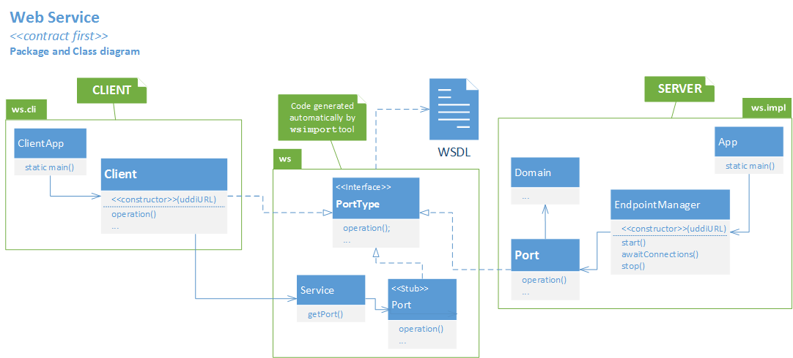

Legenda:
-
Notação UML
-
As operações descritas em cada WSDL são traduzidas na interface (PortType) gerada pelo wsimport,
incluindo tipos de dados e exceções.
-
Servidor:
-
App -
ponto de entrada no programa servidor.
Recebe os argumentos de linha de comando e instancia o gestor da comunicação.
(nomes alternativos: Application, Main)
-
EndpointManager -
recebe argumentos no construtor e
vai criar a extremidade (Endpoint) do Web Service,
ou seja,
vai criar um socket associado a um URL onde o servidor fica à espera de receber pedidos.
Vai também ser responsável pela publicação do Web Service no UDDI.
-
Port -
implementação da interface (PortType) do Web Service.
Define o que cada operação vai fazer.
Em Web Services de maior dimensão, poderá usar um ou mais objetos de Domínio para
implementar a lógica da aplicação.
(nomes alternativos: PortImpl, Impl)
-
Cliente:
-
ClientApp -
ponto de entrada no programa cliente.
Recebe os argumentos de linha de comando e
instancia um cliente para invocações remotas.
(nomes alternativos: ClientApplication, ClientMain)
-
Client -
implementação da interface (PortType) do Web Service,
que enriquece o Stub gerado
(obtido a partir do Service)
com a configuração do URL obtido por pesquisa do Web Service no UDDI.
(nomes alternativos: Stub, FrontEnd)
Diagrama com dependências para bibliotecas
{kind=link}
{kind=link}